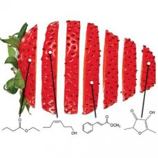

Ali je današnja prehrana bolj zdrava kot v pretklosti?
Bolj podrobno sem opisal to temo že na spletni strani "Nanotehnologija in živila", vendar pa se nisem prav posebi posvetil sami primerjavi med DANAŠNJO prehrano, v kateri ima zmeraj večje posege nanotehnologija, in prehrano v PRETEKLOSTI, ko nanotehnologija ni bila niti poznana. Primerjal bom prehrano ljudi iz preteklosti, ki si je lahko privoščila hrano in ni živela v revščini
Veliko ljudi je proti zmeraj večji implantaciji nanotehnologije v ŽIVILNO INDUSTRIJO, saj naj bi zmanjševala samo kvaliteto hrane in povzročala da hrana postaja manj zdrava. [11]
Če hočemo argumentirati to izjavo se moramo najprej posvetiti vprašanju KAJ SPLOH JE ZDRAVA PREHRANA? Strokovnjaki pravijo, da je živilo zdravo v primeru da zapolnjuje naslednje 3 kriterije:
- ne sme vsebovati(mikro)bioloških dejavnikov tveganja (patogene bakterije, tehnološki kvarljivci, paraziti, virusi, škodljivci, …),
-prav tako ne sme vsebovati kemičnih dejavnikov tveganja (ostanki pesticidov, kovin, zdravil, nedovoljeniaditivi, alergeni, …),
- ter fizikalnih dejavnikov tveganja (kamenčki, delci kosti, lupin, les, zemlja, steklo, kovinski delci, plastika, …). [12]
Če gledamo iz stališč teh kriterijov lahko brez problema rečemo, da je današnja hrana zaradi nanotehnologije varnejša kot v preteklosti, saj je bistveno povečala varnost proti razno raznim mikroorganizmom, ki lahko poslabšajo kvaliteto živil.
Moramo se zavedati, da razno razni problemi s današnjo prehrano niso prinesle inovacije znotraj živiske industrije. Razlogi za to so ODLOČITVE POSAMEZNIKOV, ki pripeljejo veliko povpraševanje po hrani, katero ne moremo opredeliti kot zdravo (multinacionalke, ki se ukvarjajo s hitro prehrano,...).
Na podlagi obeh argumentov je današnja prehrana nažalost generalno gledano manj zdava kot je bil v preteklosti. Stanje se bo le še slabšalo če nebomo o tem problemu ozaveščali. Najbolj pomembno je da se se vsak zase zaveda kaj da vase in ne sme kriviti nekih drugih dejavnikov, ki so izven njegovega nadzora (V tem primeru inovacije znotraj živilske industrije, ki so povezano s nanotehnologijo)

Slika 8: Jagoda in njej dodani nanodelci